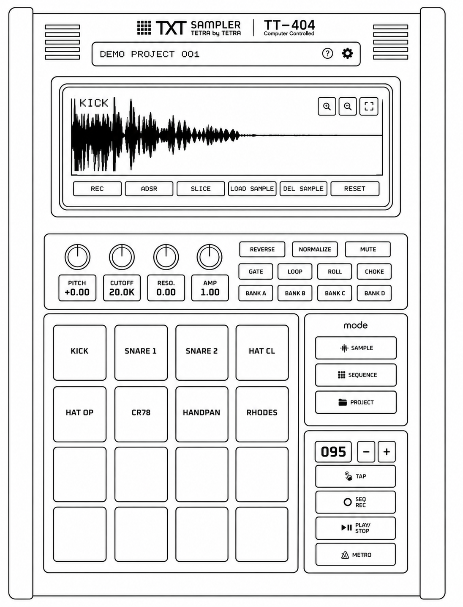
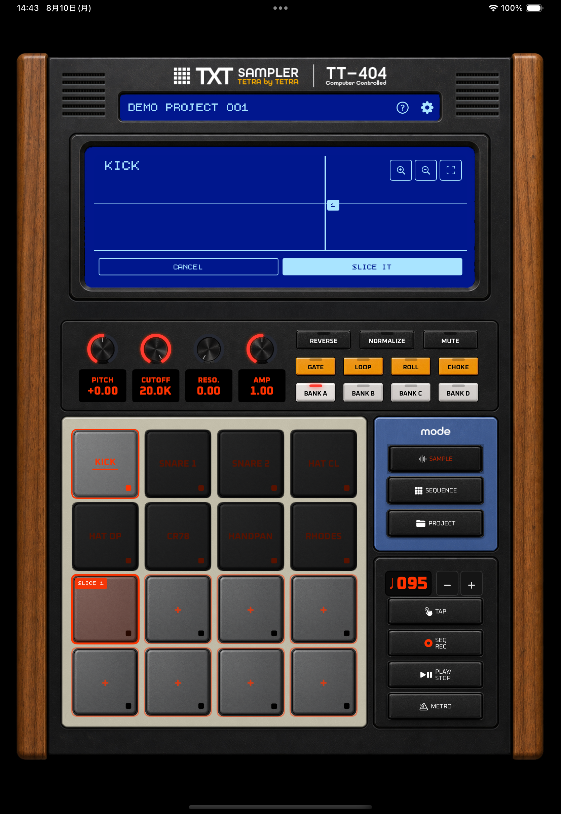
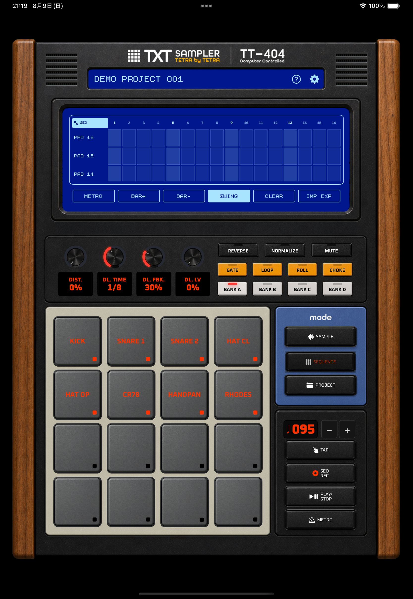
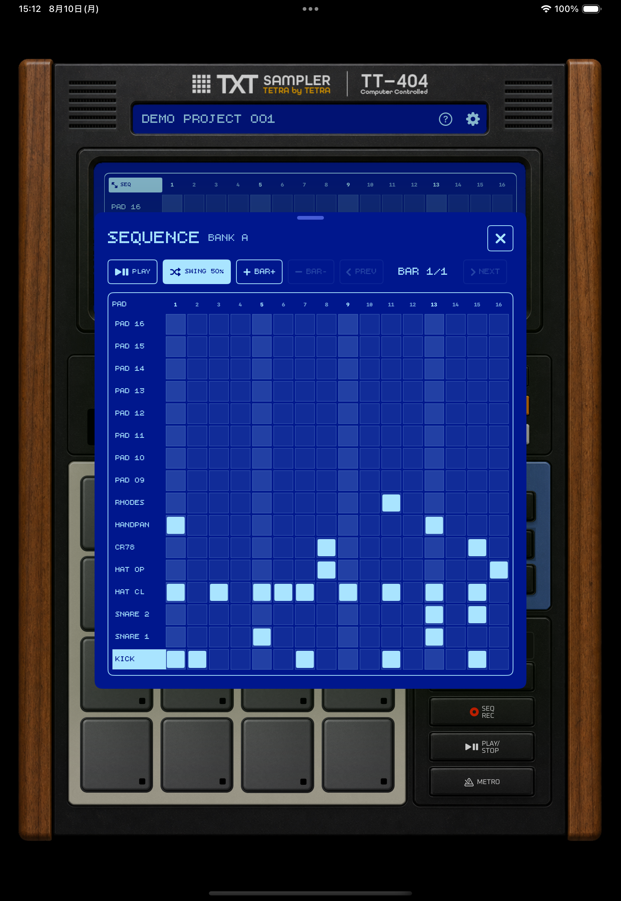
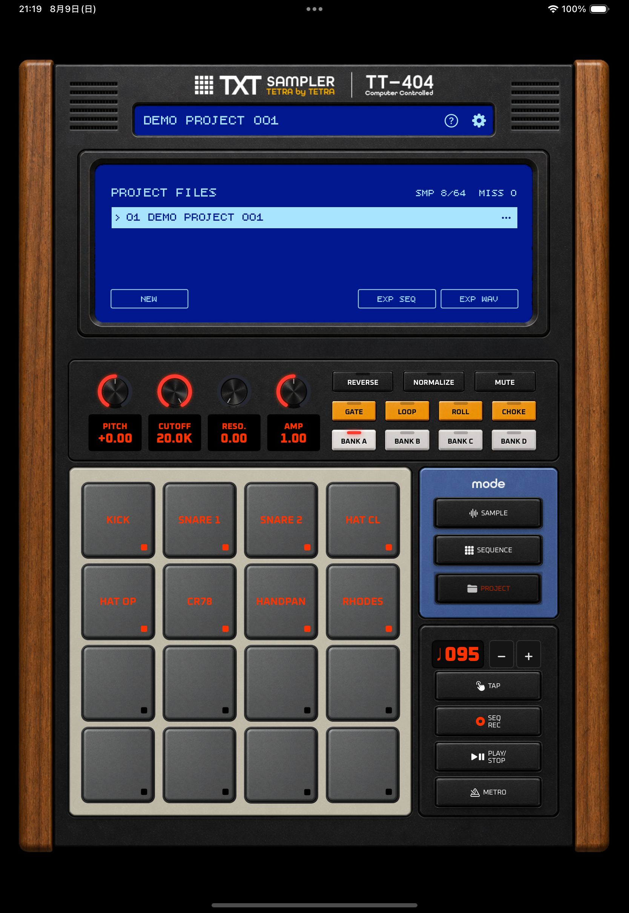
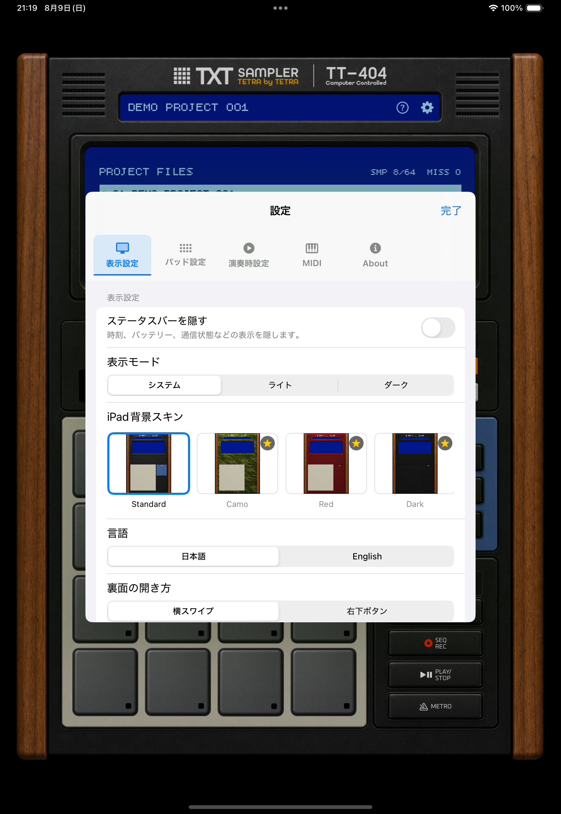
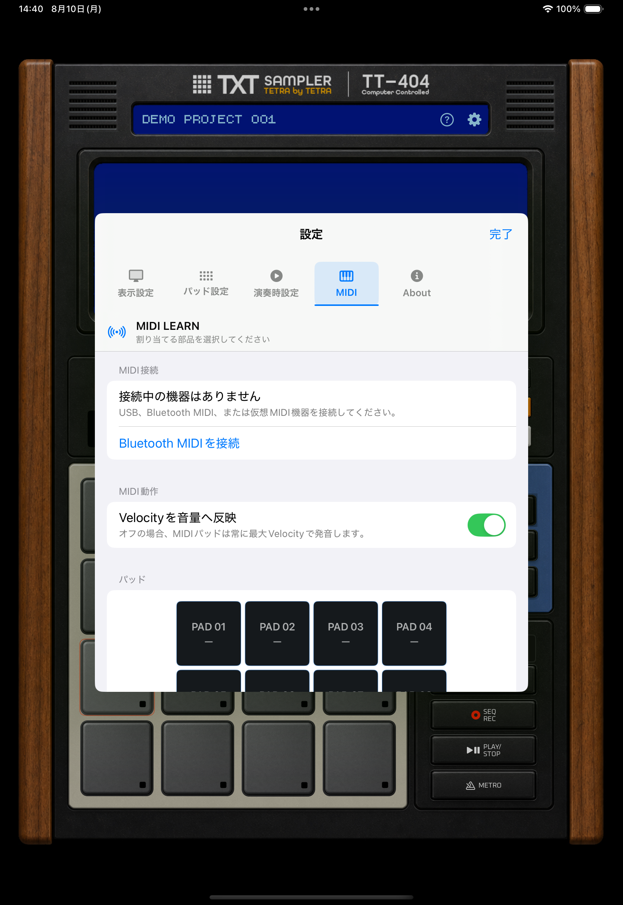

サンプルを用意する
マイクで録音するか音声ファイルを読み込み、波形と音色を整えます。
公式取扱説明書
TXT sampler / TT-404
バージョン 1.5.2 / 更新 2026-08-11

01
はじめに
iPhone・iPad共通の操作を説明します。画像上の青い番号は、右側または直後にある説明番号と対応しています。ボタン名は LOAD SAMPLEのように、アプリと同じ英語表記で示します。
マイクで録音するか音声ファイルを読み込み、波形と音色を整えます。
シーケンスへ音を配置し、繰り返し再生します。
サンプル、パッド設定、シーケンスを保存し、完成したループをWAVにします。
音を入れたいパッドをタップします。選択中のパッド名が波形画面に表示されます。
音声ファイルを選ぶと、現在選択しているパッドへ読み込まれます。
読み込み後にパッドをタップします。音が出れば準備完了です。
02
画面構成

現在のプロジェクト名、ヘルプ、設定を表示します。ヘルプからオンラインマニュアルまたはサポートフォームを選んで開けます。
波形、シーケンス、プロジェクト情報と、各モードの操作ボタンを表示します。
ノブとスイッチで、選択中のパッドの音を調整します。
サンプルの選択と演奏に使用します。無料プランで使えるのは上部8パッドです。
SAMPLE／SEQUENCE／PROJECTを切り替えます。
BPM、TAP、SEQ REC、PLAY／STOP、METROを操作します。

3つの制作モードを切り替えます。
選択中モードの中心操作を表示します。
4列×4行のパッドでサンプルを選択・演奏します。
サンプルのピッチやフィルタを操作。SEQUENCEモード時はエフェクトなどがコントロールできます。
サンプルのロール（連打）やループ再生、逆再生などがコントロールできます。
下部から再生・停止などの操作を開きます。
| 表示方式 | 特徴 |
|---|---|
| iPhone専用表示 | iPhoneでの操作性、演奏性を重視したレイアウトです。縦画面に最適化。左右・下部タブで補助操作を開きます。 |
| iPad縮小表示 | iPad版と同じレイアウトを、iPhone画面内へそのまま縮小して表示します。iPhoneでも実機風レイアウトを楽しみたい方に。 |
表示方式は起動時に選択でき、後から「設定 ＞ 表示設定」でも変更できます。
03
SAMPLEモード
サンプル名と波形を確認し、START／ENDで再生範囲を決めます。
REC、ADSR、SLICE、LOAD SAMPLE、DEL SAMPLE、RESETを使用します。
編集したいパッドを先に選びます。
ピッチ、フィルター、音量、再生方法を調整します。
無料プランは最大10秒、プレミアムプランは最大60秒の音声ファイルを読み込めます。
「録音する」を選んで録音した後、確認画面で「この録音を使う」を選んだ時点で、元のサンプルが新しい録音に置き換わります。
波形のSTARTとENDを動かすと、 TRIMが表示されます。TRIMを実行すると、現在の範囲を新しいサンプルとして上書きします。
必要な場合は、先にプロジェクトを複製してください。ピッチやADSRなどのパッド設定は維持されます。
04
SLICE

再生位置に縦バーが置かれ、波形の左から右へ番号が付きます。
CANCELは破棄、SLICE ITは仮スライスを実際のパッドへ保存します。
選択中の元パッドです。このパッド自身は分割先にできません。
「＋」は追加可能、SLICE番号付きの赤いパッドは割り当て済みです。
SLICEは、元サンプルを再生しながら分割点を打ち、別のパッドへ短い素材として切り出す機能です。保存を確定するまでは既存のパッド内容は変更されません。
分割点は登録した順番ではなく、波形の左から右への位置順で番号が決まります。位置を動かすと番号も並び直します。
仮スライス中に分割先パッドを押すと、その範囲だけを確認できます。納得してからSLICE ITで保存します。
ポイントを登録しないまま元サンプルが終端へ達した場合は、自動で先頭から再再生されます。
SLICE ITするまでは保存データを変更しません。CANCELで中止すると仮スライスを破棄し、元の状態を維持します。元サンプルのパッドも変更されません。
設定 ＞ パッド設定の「SLICEで既存サンプルを上書き」は初期状態でOFFです。OFFでは使用中パッドを分割先にできません。ONではSLICE IT時に対象パッドを確認してから上書きします。
SLICE IT後に元サンプルを残すか消去するかを確認します。残す場合は元のパッドを素材保管用として使えます。消去する場合でも、保存済みの分割先パッドは維持されます。
05
SEQUENCEモード

各パッドの16分ステップをタップして、音を鳴らす位置をオン・オフします。
小節数、Swing、選択中BANKのパターンを調整します。大画面SEQUENCEでは再生・停止、小節追加・減少、前後小節移動、Swing変更も操作できます。
パッドやBANKを変えると、選択中BANKのシーケンスへ切り替わります。
再生・停止を操作します。
BANK A〜Dは、それぞれ別のシーケンスステップと小節数を持ちます。BPMとSwingはプロジェクト全体で共有します。
SEQ RECをオンにするとSEQUENCEモードへ移動します。そのまま再生を始めると、1小節のカウントイン後に、パッド演奏を16分グリッドへリアルタイム録音します。カウントイン終端の入力は、次の小節の1ステップ目として記録します。画面入力のVelocityは最大で記録します。
SEQUENCE LCDは常にシーケンス表示です。1つの動的な<PREV／NEXT>ボタンで表示中のBarを移動します。シーケンス左上のSEQを押すと、同じシーケンスを大画面SEQUENCEで編集できます。iPadの大画面SEQUENCEは全16パッドを縦スクロールなしで表示します。
現行版のSEQ RECは16分ステップへ記録します。Quantize OFFのズレ保存、シーケンス上でのVelocity編集、ノート長編集は未対応です。
SEQUENCEモードのシーケンス左上にあるSEQを押すと、大画面SEQUENCEのポップアップウインドウが開きます。背景の本体画面と同じ選択中BANKを編集するため、ここでオン・オフしたステップは通常画面のシーケンスにもそのまま反映されます。

編集中のBANKを確認します。BANKを切り替えると、そのBANK専用のシーケンスステップと小節数を編集します。
再生・停止、Swing、小節追加・減少、前後小節移動をポップアップ内で操作します。無料プランの上限は2小節です。
行がパッド、列が16分ステップです。明るいセルをタップして、そのパッドを鳴らす位置をオン・オフします。
閉じても編集内容は残ります。通常画面に戻って、同じBANKのシーケンスを続けて確認できます。
ノブは上下ドラッグで調整します。中央値、ゼロ、代表的な時間など、その項目で重要な値の近くではスナップします。 ノブ下の数値表示をタップすると、対応している項目はキーボードから直接入力できます。
曲全体の速さを変更します。
偶数ステップを遅らせて、跳ねたリズムにします。
BAR+で小節を追加し、BAR-で末尾の小節を減らします。動的な<PREV／NEXT>ボタンでBarを移動します。 無料プランは2小節、プレミアムプランは最大8小節です。
SEQUENCEモードでは4つのノブがDIST.、DL. TIME、 DL. FBK.、DL. LVとして動作します。
CLEARは現在のBANKのシーケンス全体を消去します。
IMP EXPをタップすると、IMPORT JSONとEXPORT JSONを選べます。シーケンスのBPM、Swing、ステップ情報とSAMPLEのパラメータをJSONとして読み込み・書き出しできます。
IMPORT JSONは現在選択中BANKのシーケンスとSAMPLEパラメータを上書きします。音声ファイル本体と他BANKのシーケンスは含まれません。
06
PROJECTモード

サンプル数、欠落ファイル、データサイズを表示します。
NEW、EXP SEQ、EXP WAVを使用します。COPYとDELETEはプロジェクト行の「…」から開きます。
PROJECT中にパッドを押すと、SAMPLEへ移動してその音を鳴らします。
保存済みパターンを再生・停止します。
プロジェクトには、サンプル、パッド設定、シーケンス、BPMなどの作業内容が保存されます。
空のプロジェクトを作成します。
現在のプロジェクトを複製します。編集前の控えにも使えます。
選択したプロジェクトを削除します。
現在のシーケンスをWAVファイルとして書き出します。
一覧メニューやスワイプ操作から削除する場合も、対象プロジェクトをよく確認してください。
エフェクトを反映する場合は、残響を残すため最後に2秒の余白が追加されます。反映しない場合はパターンの長さぴったりで書き出します。
WAV書き出しはプレミアム機能です。
07
設定

表示設定／パッド設定／演奏時設定／MIDI／Aboutを切り替えます。
ライト、ダーク、システム設定に合わせる表示を選びます。
本体の背景スキンを選びます。追加スキンはプレミアム機能です。
演奏モードは、パッドを押した時の発音処理を優先し、演奏中のパッド押下ハプティクス、通常の再生バー更新、パッド波形サムネイル、録音・編集状態更新を抑え、iPhone・iPadともLCDには静的なLIVE MODEだけを表示します。録音、SLICE、読み込み、トリム、書き出しなどの処理中は演奏モードへ切り替えられません。音声出力は常に低レイテンシ設定で動作します。
バックグラウンド再生をオンにすると、画面ロック中、ホーム画面表示中、他アプリ表示中も再生を続けます。App Switcherでアプリを上へスワイプして終了した場合は再生を停止します。初期状態はオフです。
METROは通常再生中のメトロノームをオン・オフします。メトロノーム設定では、クリック／ビープ／リムから音色を選び、音量を0〜200%で調整できます。音色を選んだとき、音量スライダーの調整を終えたとき、または「試聴」を押したときに、現在の設定で音を確認できます。SEQ RECカウントインにも同じ音色と音量が使われます。
Bluetoothイヤホンや外部ワイヤレス機器では機器側の遅延が大きくなることがあります。演奏時は内蔵スピーカーまたは有線出力を推奨します。
08
MIDI設定

設定シート上部のMIDIを選ぶと、MIDI Learn画面へ切り替わります。
USB、Bluetooth MIDI、仮想MIDIソースの接続状態を確認します。
外部パッドのVelocityを音量へ反映するかを切り替えます。
4×4パッド、ノブ、本体操作、演奏・編集ボタンを選んでLearnします。
外部MIDIコントローラーから、パッド演奏、ノブ操作、モード・BANK切り替えなどを操作できます。MIDIの接続、Learn、受信による操作はプレミアム機能です。
「Velocityを音量へ反映」をオンにすると、パッドのVelocity 1〜127を連続した音量として反映します。オフでは常に最大Velocityで発音します。ノブのCC値は0〜127を画面上の設定範囲へ変換します。 MIDI 1.0のRunning Statusを使用する機器から送られる、複数のパケットに分かれたNote／CCにも対応します。
割り当ては全プロジェクトで共通です。パッド以外は各行から個別解除できます。割り当て済みパッドを選択すると、画面上部の「キャンセル」左に「割り当て解除」が表示されます。押すと対象パッドの割り当てを解除してLearnを終了します。全解除ではMIDI設定だけを削除し、プロジェクト、サンプル、購入状態は変更しません。プレミアム権利を確認できない場合も保存済み割り当ては残り、MIDI入力だけが無効になります。
マスター音量は現行UIにないためMIDI Learn対象外です。BPM−／＋、SAMPLE REC、ADSR、シーケンスQTZ／SWING／BAR／STEP、CLEAR、削除、初期化、購入、ファイル選択、プロジェクト管理、確認ダイアログも割り当て対象外です。MIDI Clock、MIDI出力、Program Change、Pitch Bend、NRPN、相対エンコーダーには対応していません。
「MIDI接続」に機器名があるか、Learn中に機器を操作すると「MIDI信号を受信しました」ダイアログが開くか、ダイアログの送信チャンネルと番号が割り当て表示に一致するか、プレミアム権利が有効かを確認してください。機器を抜き差しした場合は再接続を待つか、Bluetooth MIDI画面を開き直します。
すべての機器との互換性や継続動作は保証していません。機器自体の仕様、設定方法、接続方法、個別の互換性に関するお問い合わせには対応していません。本アプリに起因すると考えられる不具合は、機器名、接続方法、iOSバージョン、再現手順を添えてサポートフォームから報告してください。
09
プラン比較
| 機能 | 無料プラン | プレミアムプラン |
|---|---|---|
| パッド | バンクAの上部8パッド | 4バンク・全64パッド |
| プロジェクト | 1個 | 個数制限なし |
| シーケンス | 2小節 | 最大8小節 |
| ファイル読み込み | 最大10秒 | 最大60秒 |
| マイク録音 | 最大10秒 | 最大30秒 |
| パッド外観 | 変更不可 | 個別／一括カラー変更、長押しドラッグ交換 |
| iPad背景スキン | 標準のみ | 追加スキンを選択可能 |
| WAV書き出し | 利用不可 | 利用可能 |
| MIDIコントロール | 利用不可 | MIDI Learn・外部操作 |
プレミアムプランは買い切りです。価格はApp Storeの購入画面で確認できます。再インストールや機種変更後は 「設定 ＞ About ＞ 購入を復元」を使用してください。
既存のプロジェクトやサンプルは保持されます。購入を復元すると、プレミアム機能を再び利用できます。
10
よくある質問
読み込み先パッドを先に選び、LOAD SAMPLEをタップします。ファイルの長さがプランの上限以内か確認してください。
iOSの「設定」からTXT samplerのマイク使用を許可します。その後、録音先パッドを選んでRECをタップしてください。すでに音があるパッドでは、確認で「録音する」を選ぶと録音を開始します。
対象パッドを選び、LOAD SAMPLEから音声を読み込み直します。
通信できる状態で「設定 ＞ About ＞ 購入を復元」を実行します。購入時と同じApple Accountを使用しているか確認してください。
「設定 ＞ 演奏時設定」で「画面をスリープさせない」をオンにします。画面ロック中も再生を続けたい場合は「バックグラウンド再生」もオンにします。
裏面パネルのFACTORY RESETを使用します。すべてのプロジェクト、サンプル、シーケンス、アプリ設定を削除し、DEMO PROJECT 001を作成し直します。この操作は取り消せません。
11
規約とプライバシー

購入案内と「購入を復元」を表示します。
利用規約、EULA、プライバシーポリシーを開きます。
本アプリの利用条件、禁止事項、免責、プレミアムプランなどについて定めています。
外部MIDI機器との互換性、接続、遅延、信号欠落、誤入力、サポート対象、および本アプリの配信・アップデート・サポート終了に関する条件も利用規約に記載しています。
録音音声、読み込みサンプル、プロジェクトデータは端末内のアプリ領域へ保存され、ユーザーの操作なしに外部へ送信されません。 共有・書き出し時の保存先はユーザーが選択します。
12
データ仕様
ここに記載している数値は、アプリ内の読み込み・録音・保存・書き出しの制限に合わせています。 端末やiOSの状態により、読み込める音声ファイルでも破損ファイル、空ファイル、保護されたファイルは使用できない場合があります。
| 項目 | 仕様 | 補足 |
|---|---|---|
| 対応形式 | iOSで読み込める音声、WAV、AIFF、MP3、MPEG-4 Audio | ファイル選択画面では音声ファイルを1つ選択します。 |
| ファイルサイズ | 最大20MB | 20MBを超える音声ファイルは読み込めません。 |
| チャンネル数 | 最大2ch | モノラルまたはステレオの音声を使用できます。 |
| 読み込み時間 | 無料プラン: 最大10秒 プレミアムプラン: 最大60秒 | 上限を超えるファイルは、短く編集してから読み込んでください。 |
| 空ファイル | 不可 | 長さが0の音声ファイルは読み込めません。 |
| 項目 | 仕様 | 補足 |
|---|---|---|
| 録音時間 | 無料プラン: 最大10秒 プレミアムプラン: 最大30秒 | 既存サンプルがあるパッドではREC時に確認が表示されます。この時点では置き換えず、録音後に「この録音を使う」を選んだ時点で現在のパッドへ割り当てます。 |
| 録音一時形式 | CAF | 録音中の一時ファイル形式です。ユーザーが直接選ぶ項目ではありません。 |
| サンプルレート | 44.1kHz | マイク録音の保存時に使用します。 |
| 項目 | 仕様 | 補足 |
|---|---|---|
| パッド数 | 1バンク16パッド / 最大4バンク・64パッド | 無料プランで使えるのはバンクAの上部8パッドです。 |
| シーケンス長 | 1小節 = 16ステップ 無料プラン: 2小節 プレミアムプラン: 最大8小節 | 最大128ステップまで使用できます。 |
| BPM | 40〜300 | TAPまたはBPMコントロールで変更します。 |
| Swing | 0% / 25% / 50% / 75% | SWINGを押すたびに25%刻みで切り替わります。 |
| パッド名 | 最大32文字 | 長すぎる名前は保存時に制限されます。 |
| プロジェクト名 | 最大48文字 | ファイル名として使いやすい文字へ整えられる場合があります。 |
| 項目 | 仕様 | 補足 |
|---|---|---|
| プロジェクトアーカイブ | 最大512MB | インポートするプロジェクトファイルの上限です。 |
| WAV書き出し | プレミアム機能 | PROJECTモードのEXPORT WAVから実行します。 |
| 書き出し回数 | 1〜32ループ | 同じシーケンスを何回繰り返して書き出すかを選びます。 |
| 書き出し形式 | WAV / 44.1kHz / 2ch | シーケンス全体をステレオWAVとして作成します。 |
| エフェクトON | 末尾に2秒のTailを追加 | ディレイやリバーブなどの余韻を残します。 |
| エフェクトOFF | シーケンス長ぴったり | 余白なしで書き出します。 |
13
エラー
この一覧には、プログラム内の代入元から画面のアラートまたはエラー表示欄まで到達することを確認できた、固定文とメッセージテンプレートだけを掲載しています。 「{詳細}」はiOSやフレームワークが返す説明、「{PAD番号}」「{PAD一覧}」「{数値}」は実行時に変わる部分です。 サンプル読み込みの一部ではiOSが返したエラー文を加工せず表示するため、固定できない本文は一覧に含めていません。 確認ダイアログ、操作案内、成功メッセージも対象外です。
| 表示されるメッセージ | 意味 | 対応 |
|---|---|---|
| 表示場所：AUDIO ERROR アラート | ||
| 音声ファイルを読み込めません。別のファイルを選択してください。 | 選んだファイルを音声として開けません。 | 別の音声ファイルを選ぶか、WAV、AIFF、MP3、MPEG-4 Audioなどへ変換してから読み込んでください。 |
| 空の音声ファイルは読み込めません。 | ファイルに再生できる音声データがありません。 | 長さのある音声ファイルを選んでください。 |
| ファイルサイズは {数値}MB 以下にしてください。 | 音声ファイルが上限を超えています。 | ファイルサイズを小さくして再度読み込んでください。 |
| サンプル長は {数値} 秒以下にしてください。 | 読み込み可能な秒数を超えています。 | 無料プランは10秒、プレミアムプランは60秒以内に編集してから読み込んでください。 |
| 無料プランでは10秒まで読み込めます。60秒まで読み込むにはプレミアムプランが必要です。 | 無料プランの読み込み時間上限を超えています。 | 10秒以内のファイルを選ぶか、プレミアムプランを有効にしてください。 |
| チャンネル数は {数値}ch までに制限してください。 | 音声ファイルのチャンネル数が多すぎます。 | モノラルまたはステレオに変換してから読み込んでください。 |
| サンプルを保存できませんでした。{詳細} | 読み込んだ音声をパッドへ保存できません。 | 空き容量、ファイルの読み取り権限、ファイル形式を確認し、別のファイルでも試してください。 |
| {PAD一覧} のサンプルを音声再生用に準備できませんでした。サンプルを読み込み直してください。 | 表示されたパッドの保存済みサンプルを再生用に準備できません。 | 対象パッドを選び、LOAD SAMPLEから音声を読み込み直してください。 |
| 録音を開始できませんでした。録音用オーディオ設定を開始できませんでした。接続中のBluetooth機器やオーディオ出力を外して、もう一度録音してください。 | 接続機器の影響で録音用設定を開始できません。 | Bluetooth機器や外部オーディオ出力を外して再試行してください。 |
| 録音を開始できませんでした。録音用オーディオ設定を開始できませんでした。録音を開始できませんでした。マイク権限と入力機器を確認してください。 | 録音処理を開始できません。 | マイク権限と入力機器を確認してください。 |
| 録音を開始できませんでした。録音用オーディオ設定を開始できませんでした。{詳細} | 録音用設定の開始時に別のエラーが発生しました。 | マイク権限と入出力機器を確認し、表示された詳細も確認してください。 |
| 録音を開始できませんでした。マイクの使用が許可されていません。iOS設定でTXT samplerのマイクを許可してください。 | マイク権限が許可されていません。 | iOS設定でTXT samplerのマイクを許可してください。 |
| 録音データを作成できませんでした。入力レベルとマイク権限を確認してください。 | 録音後に使用できる音声データを作成できません。 | マイク権限、入力レベル、録音時間を確認して、もう一度録音してください。 |
| 音声エンジンを開始できませんでした。アプリを再起動してください。 | 再生に必要な音声エンジンを開始できません。 | アプリを終了して再起動してください。外部オーディオ機器を使っている場合は接続も確認してください。 |
| トリムするサンプルがありません。 | 現在のパッドにトリム対象のサンプルがありません。 | 先にサンプルを読み込むか録音してください。 |
| トリム範囲を変更してからTRIMしてください。 | トリム開始・終了位置が変更されていません。 | 波形上で範囲を調整してからTRIMを実行してください。 |
| トリム保存に失敗しました。{詳細} | トリム後の音声を保存できません。 | 空き容量を確認し、範囲を短くするか、サンプルを読み込み直して再試行してください。 |
| トリムしたサンプルを保存できませんでした。{詳細} | トリム後のサンプル参照を保存できません。 | 空き容量を確認して再試行してください。 |
| パッド名を保存できませんでした。{詳細} | パッド名を保存できません。 | 名前を設定し直してください。 |
| パッド表示設定を保存できませんでした。{詳細} | パッド名または表示設定を保存できません。 | 設定をやり直してください。 |
| パッドカラーを保存できませんでした。{詳細} | 複数パッドのカラーを保存できません。 | カラー設定をやり直してください。 |
| パッドをコピーできませんでした。{詳細} | パッドのコピー内容を保存できません。 | コピー元とコピー先を確認して再試行してください。 |
| パッドを入れ替えできませんでした。{詳細} | パッドの入れ替え内容を保存できません。 | 対象パッドを確認して再試行してください。 |
| パッドを削除できませんでした。{詳細} | パッドの削除内容を保存できません。 | 対象パッドを確認して再試行してください。 |
| パッド設定をリセットできませんでした。{詳細} | パッドの初期化に失敗しました。 | 同じ操作を再試行し、改善しない場合はアプリを再起動してください。 |
| シーケンスを保存できませんでした。{詳細} | ステップやBPMなどのシーケンス情報を保存できません。 | 操作を少し待ってから再試行してください。プロジェクト切り替え前に再生を停止してください。 |
| シーケンス設定を保存できませんでした。{詳細} | シーケンス関連の設定保存に失敗しました。 | 同じ設定を再度変更し、保存されるか確認してください。 |
| パッド設定を保存できませんでした。{詳細} | パッドの音声パラメータを保存できません。 | 設定をやり直してください。 |
| マスター設定を保存できませんでした。{詳細} | マスター設定を保存できません。 | 設定をやり直してください。 |
| シーケンスJSONを読み込めませんでした。{詳細} | 選んだJSONをシーケンスとして読み込めません。 | TXT samplerから書き出したJSONか、対応形式のJSONか確認してください。 |
| シーケンスJSONを書き出せませんでした。{詳細} | シーケンスJSONの作成または共有に失敗しました。 | 空き容量と共有先を確認してから再試行してください。 |
| オーディオを書き出せませんでした。{詳細} | WAV書き出しに失敗しました。 | 空き容量、書き出しループ数、共有先を確認して再試行してください。 |
| シーケンスを復旧用スナップショットから復元しました。 | 通常データを読めず、復旧用データを使用しました。 | シーケンスを確認し、プロジェクトを保存し直してください。 |
| シーケンスを復元できませんでした。空のパターンで表示しています。 | シーケンスを復元できず、空の状態を表示しています。 | シーケンスを作り直してください。 |
| PAD {PAD番号}の設定を復旧用スナップショットから復元しました。 | パッド設定に復旧用データを使用しました。 | 対象パッドを確認し、プロジェクトを保存し直してください。 |
| PAD {PAD番号} の設定を復元できませんでした。既定値で表示しています。 | パッド設定を復元できず、既定値を使用しています。 | 対象パッドを設定し直してください。 |
| PAD {PAD番号} のサンプルファイルが見つかりません。 | 保存されていたサンプルファイルがありません。 | 対象パッドへサンプルを読み込み直してください。 |
| マスター設定を復旧用スナップショットから復元しました。 | マスター設定に復旧用データを使用しました。 | 設定を確認し、プロジェクトを保存し直してください。 |
| マスター設定を復元できませんでした。既定値で表示しています。 | マスター設定を復元できず、既定値を使用しています。 | マスター設定をやり直してください。 |
| 表示場所：PROJECT アラート | ||
| プロジェクトを初期化できませんでした。{詳細} | 起動時のプロジェクト準備に失敗しました。 | アプリを再起動してください。 |
| プロジェクトを作成できませんでした。{詳細} | 新しいプロジェクトを保存できません。 | 空き容量を確認して再試行してください。 |
| プロジェクトを開けませんでした。{詳細} | 選んだプロジェクトを開けません。 | 別のプロジェクトを開き、必要に応じて修復を試してください。 |
| プロジェクトをコピーできませんでした。{詳細} | プロジェクトを複製できません。 | 空き容量を確認して再試行してください。 |
| プロジェクトを削除できませんでした。{詳細} | プロジェクトを削除できません。 | 対象を確認して再試行してください。 |
| プロジェクトを読み込めませんでした。{詳細} | プロジェクトアーカイブを読み込めません。 | 対応ファイルと空き容量を確認してください。 |
| プロジェクトを修復できませんでした。{詳細} | プロジェクト修復に失敗しました。 | アプリを再起動して再試行してください。 |
| プロジェクト名を保存できませんでした。{詳細} | プロジェクト名の変更を保存できません。 | 短い名前に変更し、ファイル名に使いにくい記号を避けてください。 |
| パッド情報を保存できませんでした。{詳細} | 不足していたパッド情報を作成して保存できません。 | アプリを再起動して再試行してください。 |
| 書き出すWAVファイルがありません。 | 書き出し後に共有できるWAVファイルが見つかりません。 | もう一度EXP WAVを実行してください。 |
| 初期化できませんでした。{詳細} | FACTORY RESETを完了できません。 | アプリを再起動してから再試行してください。 |
| 表示場所：プレミアム画面の赤色テキスト | ||
| 購入情報を取得できませんでした。通信状態を確認して、もう一度お試しください。 | プレミアム情報を取得できません。 | 通信状態を確認し、時間を置いて再試行してください。 |
| 購入情報を取得できませんでした。{詳細} | 商品情報の取得中にエラーが発生しました。 | 詳細と通信状態を確認して再読み込みしてください。 |
| 購入は承認待ちです。承認後に自動で反映されます。 | 購入が保護者承認などの待機状態です。 | 承認が完了するまで待ってください。 |
| 購入結果を確認できませんでした。 | App Storeから未対応の購入結果が返されました。 | 通信状態と購入状態を確認してください。 |
| 購入を完了できませんでした。{詳細} | 購入処理が完了しませんでした。 | Apple Account、支払い方法、通信状態を確認して再試行してください。 |
| 復元できるプレミアムプランが見つかりませんでした。 | 現在のApple Accountで復元対象が見つかりません。 | 購入時と同じApple Accountでサインインしてから復元してください。 |
| 購入を復元できませんでした。{詳細} | 購入復元に失敗しました。 | 通信状態を確認し、時間を置いて再試行してください。 |
| 検証できない購入情報がありました。通信状態を確認して、購入を復元してください。 | 現在の購入資格を検証できません。 | 通信状態を確認して購入を復元してください。 |
| 購入情報を検証できませんでした。購入を復元してください。 | 更新された購入情報を検証できません。 | 購入を復元してください。 |
| 表示場所：MIDI設定のオレンジ色警告 | ||
| MIDI機器へ接続できませんでした。（{詳細}）再接続を待っています。 | MIDI入力機器への接続に失敗しました。 | ケーブル、ハブ、電源、Bluetooth MIDI接続を確認してください。外部機器固有の設定や互換性はサポート対象外です。 |
デフォルトプロジェクトのサウンドには、Freesoundで公開されているCC0ライセンスの素材を使用しています。
不具合、操作方法、ご意見・ご要望はサポートフォームからお送りください。氏名やメールアドレスなどの個人情報は入力しないでください。外部MIDI機器自体の仕様、設定、接続方法、個別機器との互換性には回答していません。本アプリに起因すると考えられる不具合は受け付けます。個別回答、修正、要望の採用、対応期限は保証せず、FAQや今後のアップデート・品質改善の参考にします。
サポートフォームを開く はじめに戻る